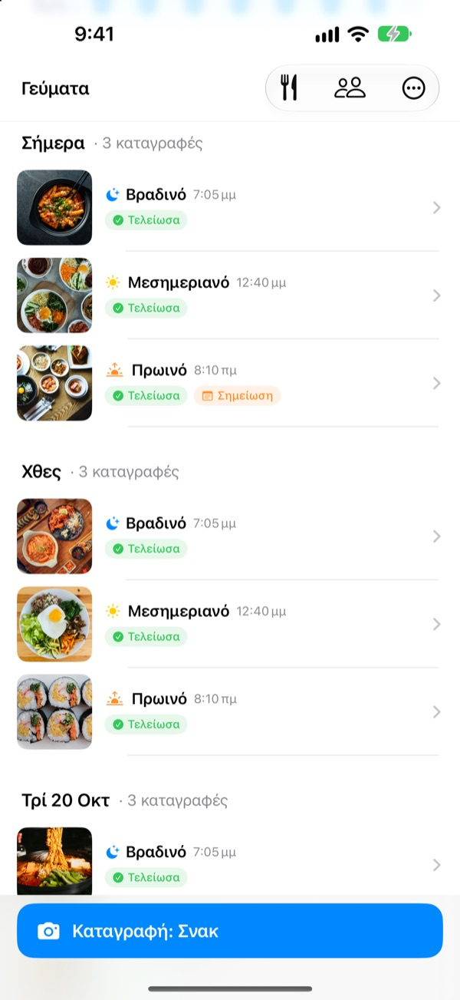
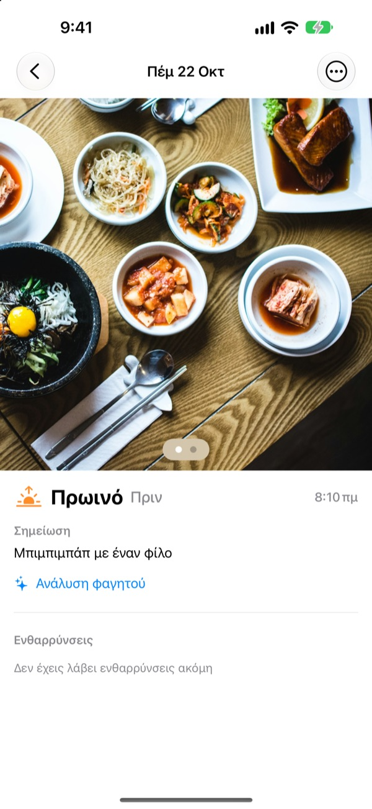
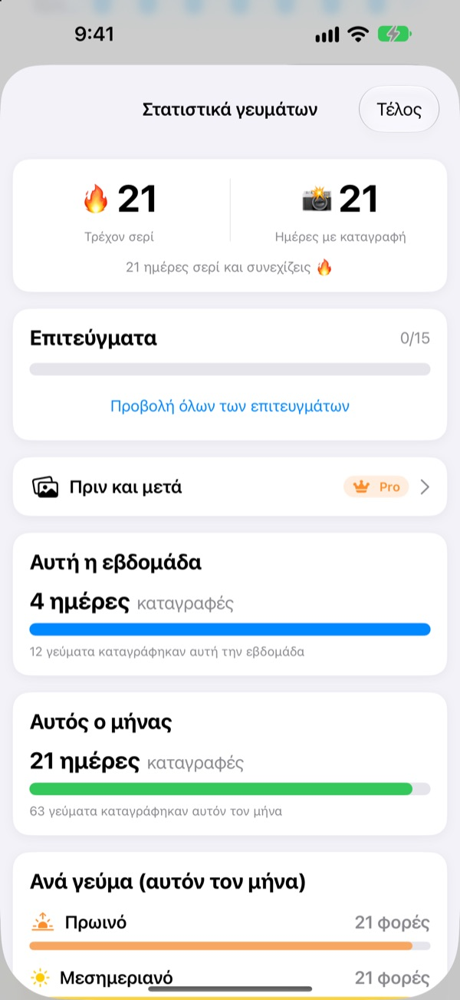
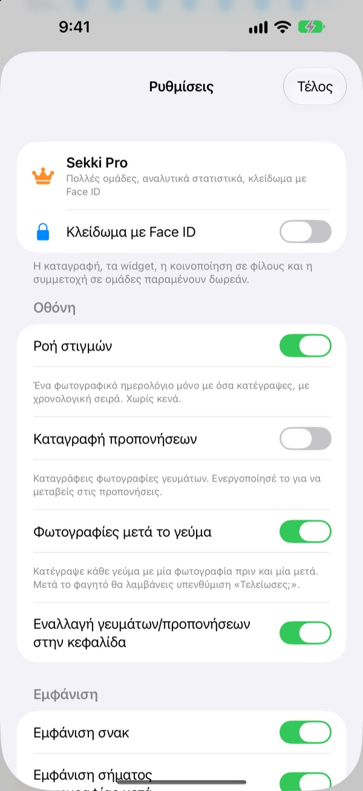

Μία φωτογραφία πριν φας.
Και η καταγραφή έγινε.
Το Sekki βλέπει την ώρα της λήψης και τη βάζει στο πρωινό, το μεσημεριανό, το βραδινό ή στα σνακ. Κατάγραψε έστω ένα γεύμα τη μέρα και το σερί συνεχίζεται.
Η καταγραφή, τα στατιστικά, τα widget και η κοινοποίηση με φίλους είναι δωρεάν.

Δοκίμασέ το
Διάλεξε ώρα και πάτα το κουμπί καταγραφής. Όπως στην εφαρμογή, το κουμπί δείχνει ήδη το γεύμα εκείνης της ώρας.
Παράτησες ημερολόγιο διατροφής μετά από τρεις μέρες;
Παραλείπεις ένα πρωινό, ξεχνάς ένα βραδινό, και τα κενά κουτάκια αρχίζουν να σε εκνευρίζουν μέχρι να σβήσεις την εφαρμογή. Το Sekki δεν έχει κενά κουτάκια. Μαζεύονται με τη σειρά μόνο τα γεύματα που καταγράφεις, και μία φωτογραφία αρκεί για να μετρήσει η μέρα.
Τράβα φωτογραφία, το γεύμα μπαίνει στη θέση του
Ανάλογα με την ώρα λήψης, το Sekki τη βάζει στο πρωινό, το μεσημεριανό, το βραδινό ή στα σνακ. Πρόσθεσε φωτογραφίες πριν και μετά, κατάγραψε χωρίς φωτογραφία ή γράψε μια σημείωση.
Το φαγητό αναγνωρίζεται δωρεάν στη συσκευή και οι φωτογραφίες σου δεν φεύγουν ποτέ από το κινητό.

Ένα ημερολόγιο που δεν μικραίνει ποτέ
Ένα γεύμα τη μέρα κρατά το σερί, και ο συνολικός αριθμός ημερών καταγραφής δεν πέφτει ποτέ. Τα εβδομαδιαία και μηνιαία στατιστικά δείχνουν πόσες μέρες και πόσα γεύματα κατέγραψες, όχι ποσοστό επιτυχίας.
Στην πορεία μαζεύεις επιτεύγματα όπως 7 ημέρες σερί ή Πρωινός τύπος.

Μόνο τα γεύματα που διαλέγεις, χωρίς να ανοίξεις την εφαρμογή
Διάλεξε για ποια γεύματα θέλεις υπενθύμιση και ρύθμισε τις ώρες στο πρόγραμμά σου. Μετά τη φωτογραφία πριν το φαγητό, σημειώνεις Τελείωσα απευθείας από την ειδοποίηση.
Κατάγραψε και με το κουμπί Δράσης, το Siri, τις Συντομεύσεις ή ένα widget, και πρόσθεσε φίλους με κωδικό για να εμψυχώνεστε με emoji και σχόλια.

Ξεκινάς σε τρία βήματα
- 1
Διάλεξε τα γεύματα
Την πρώτη φορά το Sekki ρωτά για ποια γεύματα να σου θυμίζει. Αλλάζει από τις Ρυθμίσεις.
- 2
Φωτογραφία πριν φας
Το κουμπί καταγραφής δείχνει ήδη το γεύμα της τρέχουσας ώρας. Πάτα, τράβα, έτοιμο.
- 3
Τελείωσες; Ένα πάτημα
Πάτα Τελείωσα στην ειδοποίηση ή στο widget, ή πρόσθεσε φωτογραφία μετά.
Καταγραφή χωρίς να ανοίξεις την εφαρμογή
- Ειδοποίηση
- Μετά τη φωτογραφία πριν το φαγητό, σημείωσε Τελείωσα από την ειδοποίηση
- Widget οθόνης Αφετηρίας
- Δες τις σημερινές καταγραφές και το γεύμα σε εξέλιξη, και πάτα Τελείωσα
- Widget οθόνης κλειδώματος
- Ορθογώνιο, κυκλικό και σε μία γραμμή
- Κουμπί Δράσης · Siri · Συντομεύσεις
- Τελείωσα με ένα πάτημα ή μία φράση
- Αποθήκευση στις Φωτογραφίες
- Ενεργοποίησέ το στις Ρυθμίσεις για χωριστά άλμπουμ Sekki για γεύματα και προπονήσεις
- Λειτουργία προπόνησης
- Οι προπονήσεις κρατιούνται χωριστά από τα γεύματα, με τις φορές του μήνα με μια ματιά
Το κουμπί Τελείωσα στο widget χρειάζεται iOS 17 ή νεότερο.
Η καταγραφή είναι δωρεάν. Το Sekki Pro πάει πιο βαθιά.
Δωρεάν
- Καταγραφή με φωτογραφίες και αυτόματη ταξινόμηση, πριν και μετά, σημειώσεις
- Σερί, συνολικές ημέρες, εβδομαδιαία και μηνιαία στατιστικά, επιτεύγματα
- Υπενθυμίσεις για τα γεύματα που διαλέγεις, Τελείωσα χωρίς άνοιγμα της εφαρμογής
- Widget, κουμπί Δράσης, Siri και Συντομεύσεις
- Κοινοποίηση γευμάτων και προπονήσεων με φίλους, emoji και σχόλια
- Δημιουργία μίας ομάδας, συμμετοχή σε όσες θέλεις
- Αναγνώριση φαγητού στη συσκευή
Sekki Pro
- Πολλές ομάδες για οικογένεια, δουλειά ή παρέα του γυμναστηρίου
- Σύγκριση γευμάτων πριν από λίγες εβδομάδες και σήμερα δίπλα δίπλα
- Τα φαγητά που τρως πιο συχνά
- Κλείδωμα της εφαρμογής με Face ID ή Touch ID
Ετήσια ή μηνιαία συνδρομή, ή εφάπαξ αγορά εφ' όρου ζωής
Η συνδρομή ανανεώνεται αυτόματα, εκτός αν ακυρωθεί τουλάχιστον 24 ώρες πριν το τέλος της περιόδου. Ακύρωσέ τη όποτε θέλεις στις Ρυθμίσεις > Λογαριασμός Apple > Συνδρομές. Όροι υπηρεσίας: m1zz.github.io/RoutineCamera/el/terms.html
Συχνές ερωτήσεις
Πού αποθηκεύονται οι φωτογραφίες μου;
Στη συσκευή σου. Αν ενεργοποιήσεις την Αυτόματη αποθήκευση στις Φωτογραφίες στις Ρυθμίσεις, μπαίνουν και στα άλμπουμ Sekki των Φωτογραφιών. Όσο είναι ενεργή η Κοινοποίηση των γευμάτων μου (είναι ενεργή από την αρχή), ανεβαίνουν στο iCloud για να τις βλέπουν οι φίλοι που πρόσθεσες. Απενεργοποιείται στις Ρυθμίσεις > Λογαριασμός · Κοινοποίηση.
Πώς προσθέτω φίλους;
Στην οθόνη Φίλοι, μοιράσου τον κωδικό σου των έξι χαρακτήρων και πληκτρολόγησε τον κωδικό του φίλου σου. Μπορείς να επικολλήσεις πολλούς κωδικούς μαζί, χωρισμένους με κόμμα.
Πώς εμψυχώνω έναν φίλο;
Άνοιξε ένα γεύμα του φίλου σου και άφησε ένα emoji ή ένα σύντομο σχόλιο. Αν δεν έχει καταγράψει ακόμα, πάτα το κενό κουτάκι για ένα διακριτικό σκούντημα.
Χάνω το σερί αν παραλείψω ένα γεύμα;
Όχι. Κατάγραψε όποιο γεύμα θες εκείνη τη μέρα, μαζί με τα σνακ, και το σερί συνεχίζεται. Ακόμα κι αν χάσεις ολόκληρη μέρα, ο συνολικός αριθμός ημερών δεν μειώνεται.
Δεν μου έρχονται ειδοποιήσεις.
Έλεγξε στις Ρυθμίσεις iOS > Γνωστοποιήσεις ότι επιτρέπονται για το Sekki και ότι η συσκευή είναι συνδεδεμένη στο iCloud. Τις ώρες υπενθύμισης τις αλλάζεις στις ρυθμίσεις της εφαρμογής.
Η αναγνώριση φαγητού στέλνει τις φωτογραφίες σε διακομιστή;
Όχι. Γίνεται στη συσκευή, οπότε οι φωτογραφίες δεν φεύγουν ποτέ από το κινητό. Δωρεάν και χωρίς όριο.
Πώς διαγράφω τον λογαριασμό και τα δεδομένα μου;
Πήγαινε Φίλοι > Λογαριασμός > Διαγραφή λογαριασμού. Ο λογαριασμός και τα δεδομένα γευμάτων στον διακομιστή διαγράφονται οριστικά. Αν κάτι πάει στραβά, στείλε μας email.
Πώς ακυρώνω τη συνδρομή;
Στις Ρυθμίσεις > Λογαριασμός Apple > Συνδρομές. Ανανεώνεται αυτόματα, εκτός αν την ακυρώσεις τουλάχιστον 24 ώρες πριν το τέλος της περιόδου. Η αγορά εφ' όρου ζωής πληρώνεται μία φορά.
Σφάλματα, ιδέες ή ερωτήσεις για τον λογαριασμό: γράψε στο leeo@kakao.com ή στείλε DM στο @lee25_ios στο Instagram. Συνήθως απαντάμε σε μία με δύο μέρες.